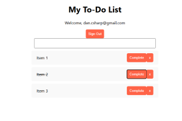
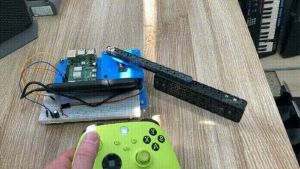

Hello – I'm a technology enthusiast with a passion for learning, creating, and doing good. I thrive on solving complex problems in communication technology, APIs, and automation, with experience in telecom, fintech, and IT support.
I’ve also built and operated a woodworking business, reflecting my passion for hard work, hands-on craftsmanship, creativity, and curiosity. I’m a self-starter who enjoys working with a team to create innovative solutions that make a difference.
Beyond work, I’m always exploring new tech—web development, AI, IoT, and VR. I also love motorcycles, outdoor adventures, and anything that fuels my adrenaline.
Designed and maintained a virtualized environment for Kazoo (cloud communication platform).
Collaborated with clients to troubleshoot API integration issues.
Used Postman, cURL, and JSON for analysis.
Resolved VoIP issues using SIP signaling analysis and network monitoring tools.
Coordinated and executed Kazoo software upgrades and testing for different client's environments.
Provided technical assistance to users of the Kazoo open-source platform.
Developed and executed test plans ensuring ADA compliance.
Maintained automated API test suites for a financial web application.
Led migration of an on-premise VoIP system to the cloud for a 700-person company.
Implemented hardware/software asset lifecycle processes.
Created and updated Windows and macOS images for compatibility.
Managed authentication and access control with Okta SSO and MFA.
Administered systems using Ivanti and Jamf Pro.
Supported AV and teleconferencing systems for meetings.
For three years, my wife and I operated a custom woodworking and furniture restoration business. Check out some of our projects
Automated Linux server provisioning with SaltStack.
Maintained Nagios/Icinga monitoring for critical infrastructure.
Managed VMware vSphere environment.
Utilized PowerShell to resolve complex Exchange issues.
Managed user accounts and permissions in Active Directory.
Provided onboarding IT training for new employees.
Troubleshoot network issues.
Imaged and deployed Windows and Mac computers.

A ToDo list web app built with react and firebase for user authentication and data storage.

Control a servo connected to a Raspberry Pi using an Xbox controller. Easy setup for testing
This project demonstrates a simple web page where an image rotates upon clicking. The design includes responsive styling and a background image for visual enhancement.